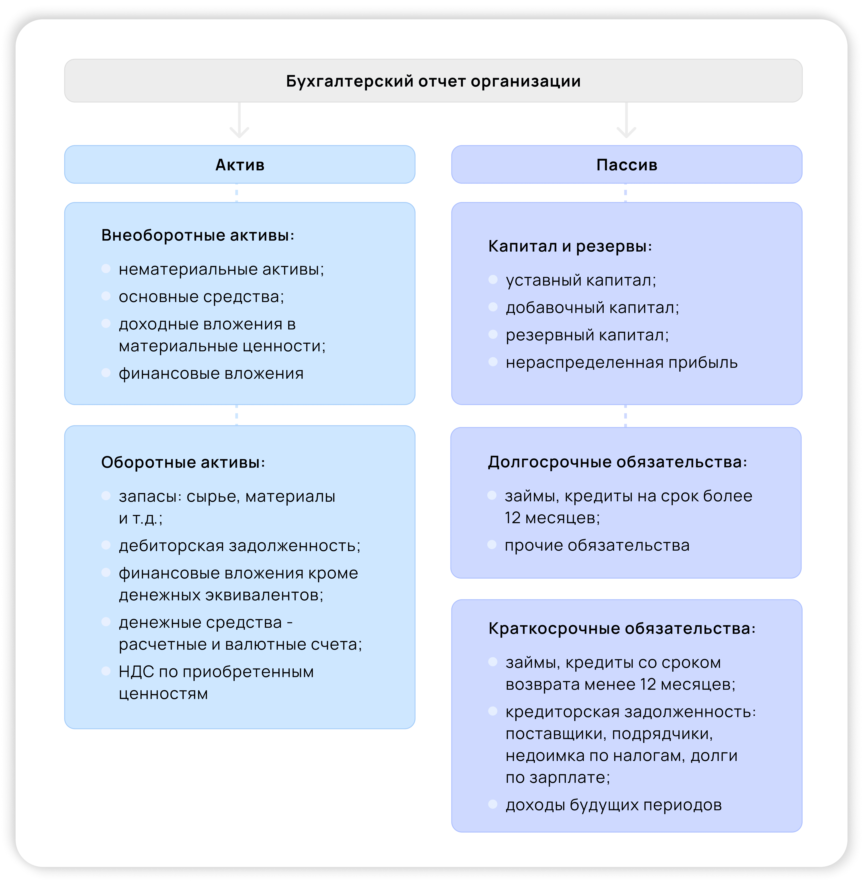

Информация о бухгалтерском балансе
Организации, которые ведут бухгалтерский учёт, обязаны сдавать годовой бухгалтерский баланс. Расскажем, что это такое, из чего состоит бухбаланс и когда его сдают.
Что такое бухгалтерский баланс
Бухгалтерский баланс — это форма №1 бухгалтерской отчётности. В соответствии с международными правилами финансовой отчётности, баланс содержит данные об активах, обязательствах и собственном капитале. Бухгалтерский баланс составляется в виде таблицы и может иметь полную и сокращённую форму. В таблице два раздела — Актив и Пассив. Бухбаланс — один из основных документов, опираясь на который можно проанализировать результаты работы компании, поскольку в нём отражается вся информация об имуществе и долгах в денежном эквиваленте. Бухгалтерский баланс нужен самому предприятию, а также для акционеров и ФНС. Баланс также потребуют в банке, если компания планирует взять кредит.
Когда сдаётся бухгалтерский баланс
По общему правилу бухгалтерский баланс сдают только 1 раз в год: в любой день с 1 по 31 марта. Такие сроки сдачи бухгалтерского баланса обозначены и в бухгалтерском (п. 2 ст. 18 закона «О бухгалтерском учёте» от 06.12.2011 № 402-ФЗ), и в налоговом (подп. 5 п. 1 ст. 23 НК РФ) законодательстве. Если компания начала деятельность в середине года, отчётный период будет сокращённым. Но сроки подготовки баланса обычные: в течение 3 месяцев после окончания отчётного периода. В случае ликвидации компании отчётный период заканчивается датой внесения в ЕГРЮЛ записи о ликвидации (ст. 17 закона № 402-ФЗ), а подготовить и сдать отчётность нужно также в течение 3 месяцев. Иногда отчётный период увеличивается. Это бывает в том случае, когда решение начать бизнес принимается в конце года и регистрация происходит после 30 сентября (например, в октябре 2020 года). Тогда по п. 3 ст. 15 закона № 402-ФЗ отчётный период продлевается и длится с 1 октября 2020 года по 31 декабря 2021 года. На срок сдачи бухгалтерского баланса такое увеличение не влияет. Баланс для собственников и иных заинтересованных лиц можно представлять в любой срок и с любой частотой (п. 4 ст. 13 закона № 402-ФЗ). Передавать эту отчётность в налоговую не нужно.
Структура и разделы бухгалтерского баланса
Бухгалтерский баланс состоит из двух частей: левая сторона называется «Актив», правая — «Пассив». В активе бухгалтерского баланса отражается всё имущество компании, включая недвижимость, финансовые вложения, автомобили, задолженность дебиторов, оборудование и т.д. В пассиве бухбаланса указывают источники образования активов компании, то есть всего её имущества. В годовом бухгалтерском балансе организации это может быть собственный капитал (уставный или добавочный), привлечённые средства и внешние обязательства. Итоги по активу и пассиву баланса должны быть всегда равны друг другу. На схеме наглядно отражены разделы бухгалтерского баланса. Они утверждены приказом Минфина России от 2 июля 2010 г. № 66н.
Форма бухгалтерского баланса
С 2021 года действует новая форма бухгалтерского баланса. В ней произошли следующие изменения: Все суммовые показатели в бухгалтерском балансе указывают только в тысячах рублей. В предыдущей форме можно было выбрать между тысячами и миллионами, теперь этого сделать нельзя. Заменили ОКВЭД на ОКВЭД2. Вид основной деятельности необходимо выбирать из классификатора ОКВЭД2. При этом код, указанный в балансе, должен присутствовать в ЕГРЮЛ компании. Иначе потребуются дополнительные разъяснения. Добавлены новые строки об обязательном аудите. Появилась отметка о том, попадает ли отчётность под обязательный аудит, и строка об аудиторской компании, проводившей проверку.С 2021 года действует новая форма бухгалтерского баланса. В ней произошли следующие изменения: Все суммовые показатели в бухгалтерском балансе указывают только в тысячах рублей. В предыдущей форме можно было выбрать между тысячами и миллионами, теперь этого сделать нельзя. Заменили ОКВЭД на ОКВЭД2. Вид основной деятельности необходимо выбирать из классификатора ОКВЭД2. При этом код, указанный в балансе, должен присутствовать в ЕГРЮЛ компании. Иначе потребуются дополнительные разъяснения. Добавлены новые строки об обязательном аудите. Появилась отметка о том, попадает ли отчётность под обязательный аудит, и строка об аудиторской компании, проводившей проверку.